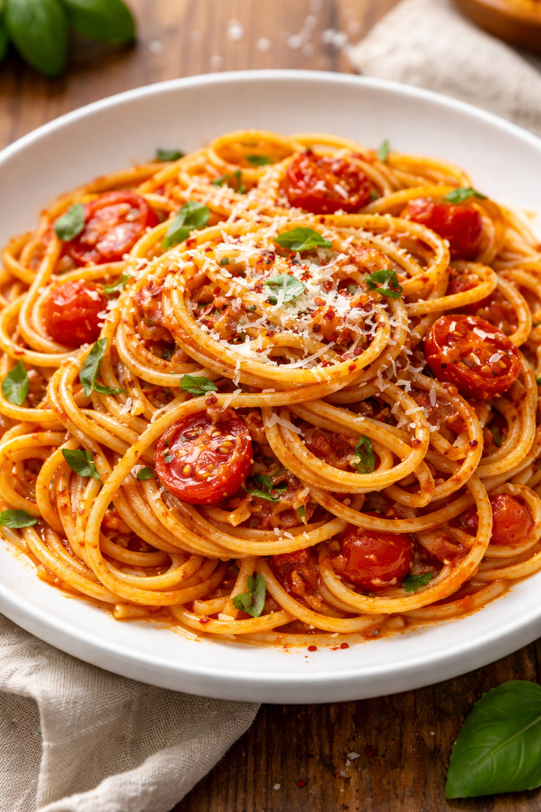

Home
Spaghetti

Description
This is a recipe that I found online that is a household favorite. It takes less than 30 minutes of preparation time. It is an easy recipe to whip up after a busy work day.
Ingredients
- 8 quarts of water
- 8 oz linguine
- 6 oz Lean Ground Beef
- 18 oz can of San Marzano Tomatoes
- 1 Sprig of Basil
- 1 tbsp olive oil
- Salt
- Fresh ground pepper to taste
- 2 tsp oregano
- 2 tsp red pepper flakes
Steps
- Bring 8 quarts of water to a boil. Salt the water to a consistency of ocean water.
- Heat a skillet with the olive oil on medium.
- Add the ground beef and cook until the pink is gone. Add 2 tbsp salt and pepper to taste.
- Add the San Marzano tomatoes. If the tomatoes do not come as a puree, then use a fork to mash the tomatoes into a smooth paste.
- Add the oregano and red pepper flakes to the sauce.
- Once the 8 quarts of water have come to a boil, add the linguine. Cook the linguine per the directions on the linguine packaging.
- Drain the linguine. Save 8 fl oz of the linguine water.
- Add the linguine to the spaghetti sauce.
- Add the linguine water 1 spoonful at a time to the spaghetti until the sauce consistency is to your liking.
- Enjoy!